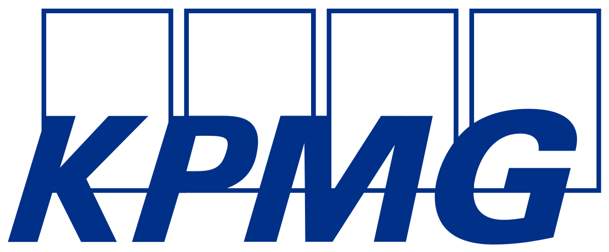

Дорабатывал алгоритмы расчета налогов для корпоративной управленческой системы Лукойла
Отслеживал законодательство, тестировал корректность расчетов в системе, давал задания разработчикам по внесению корректировок
Общался с пользователями, помогал решать проблемы с формированием отчетности в системе, объяснял, как пользоваться
с июня 2024 по август 2024
OneStory: Старший аналитик
Стратегический консалтинг в Retail
Описал методологию внедрения новой системы ценообразования для дискаунтера
Подготовил более 3-х аналитических презентаций для стратегических сессий и воркшопов
Доработал прототип программы, рассчитывающей оптимальный объем закупки товаров с учетом прогноза продаж сети
с сентября 2022 по июнь 2024
Susanin Travel: Project manager
Мобильное приложение экскурсий по городам
Привлек грант 1 млн. рублей от Фонда Содействия Инновациям
Руководил командой небольшой редакторов; совместно с администрациями городов партнеров составляли первые маршруты на платформе - добавили в сервис более 15 маршрутов

с января 2021 по июнь 2023
Kept/KPMG: Консультант
Налоговый консалтинг
Проконсультировал более 20 компаний по вопросам вступления в режим налогового мониторинга
Описал несколько методологий внедрения решений в сфере налогов